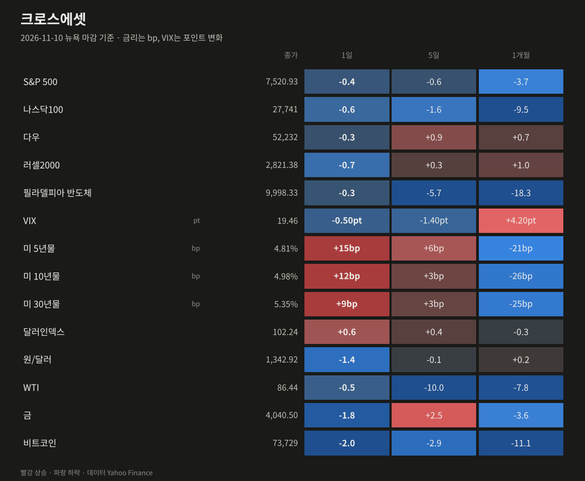
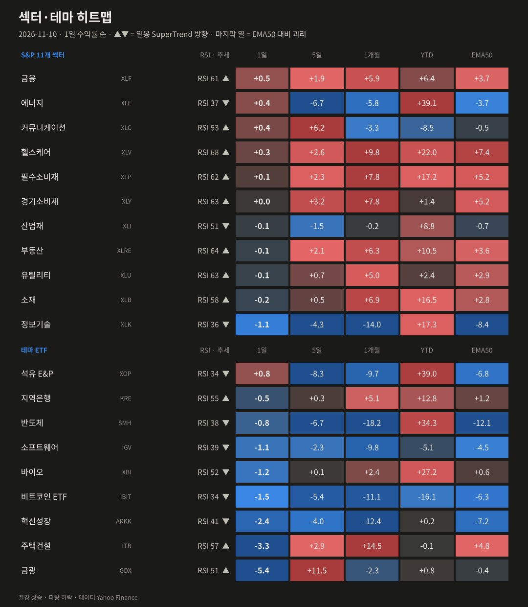
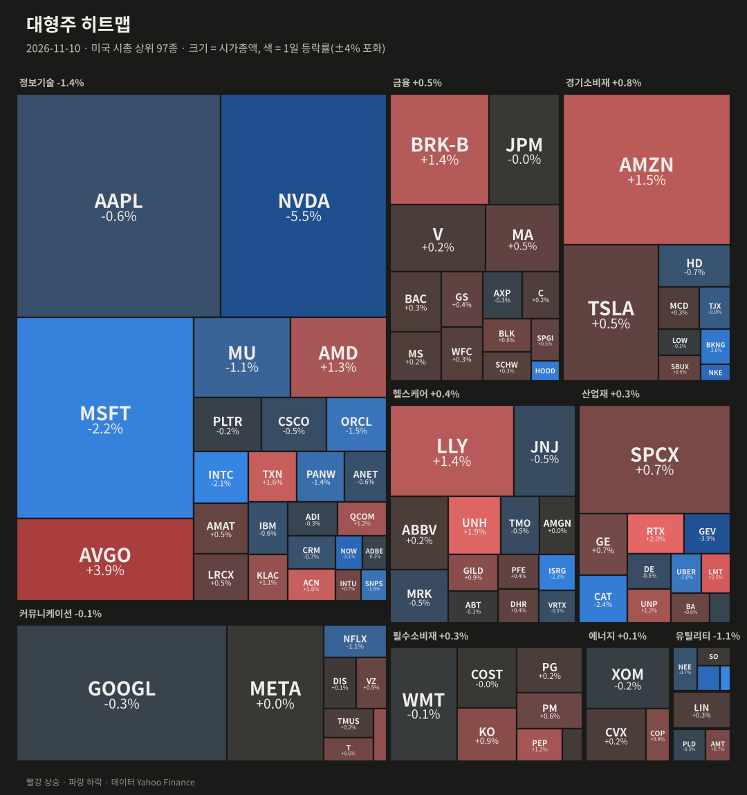
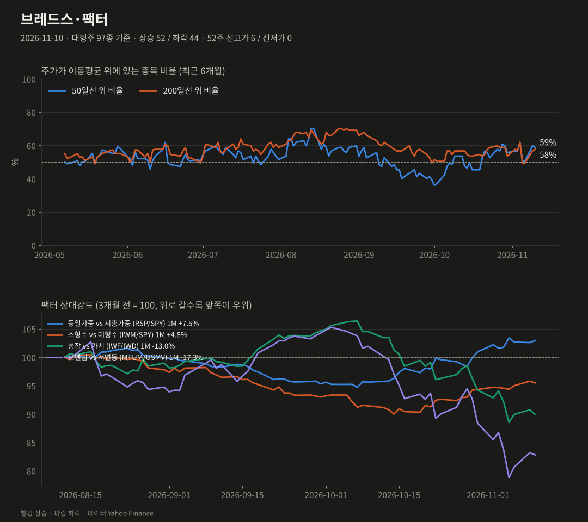
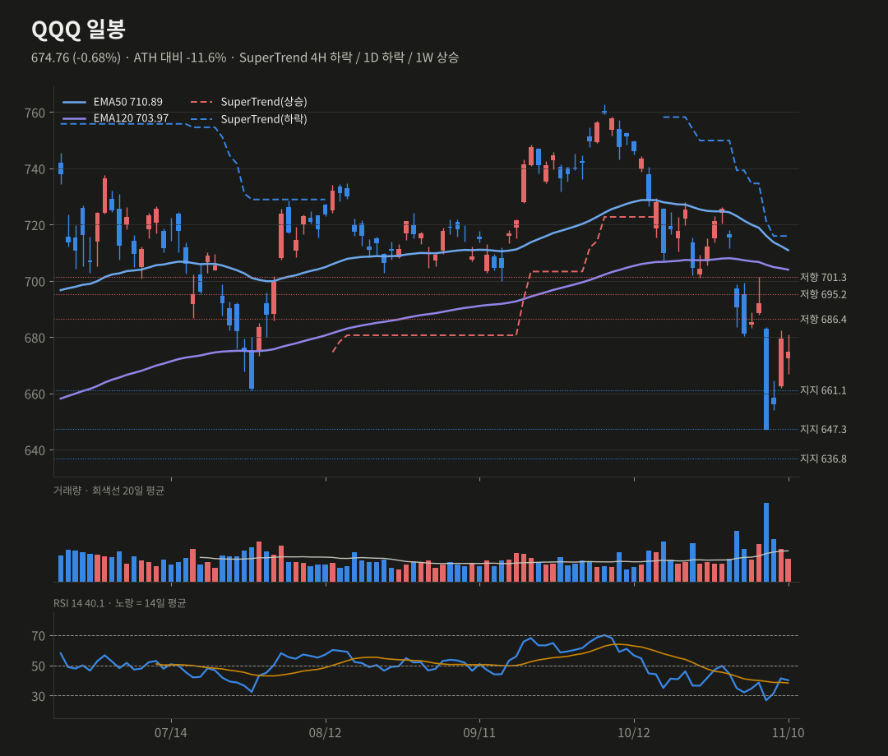
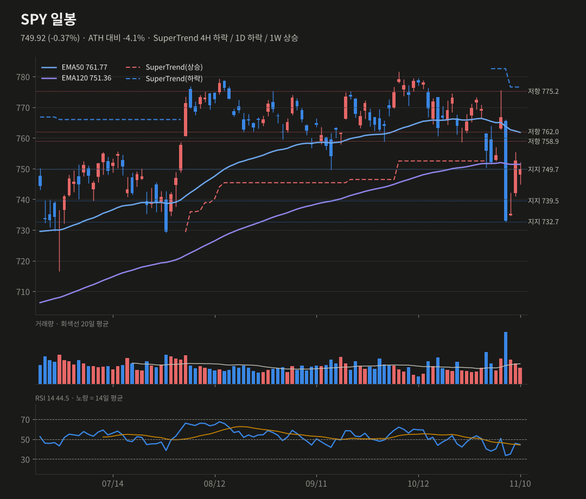
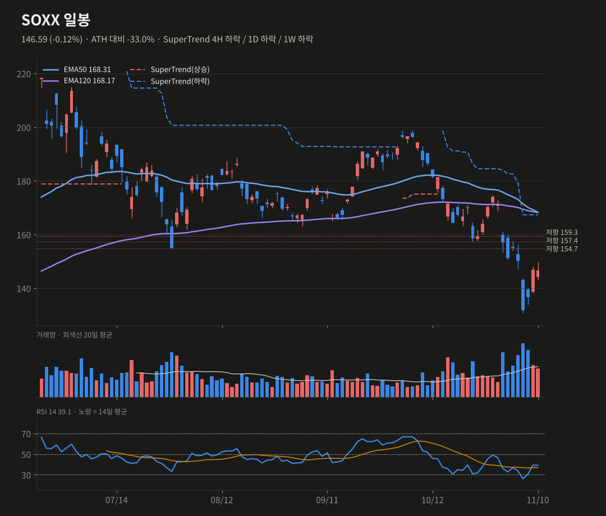
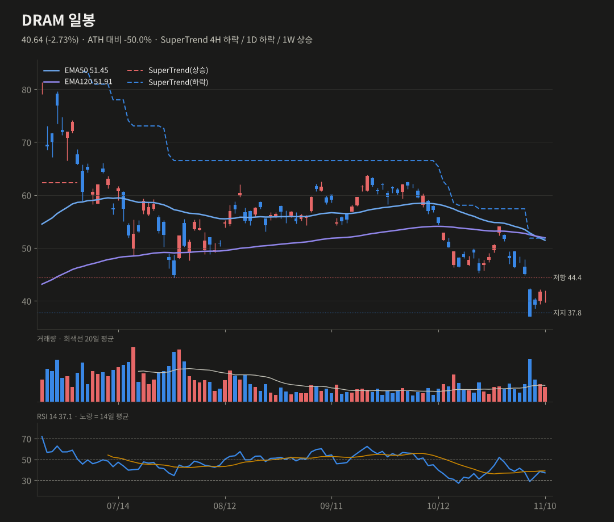

미증시 마감 브리핑
11/10(화) 뉴욕 마감 기준 · 생성 2026-11-11 07:40 KST
10월 CPI가 예상보다 뜨거워 10년물이 5%에 닿았고 12월 인상 우려가 커졌어요. 엔비디아가 −5.5% 추가 하락하며 지수는 소폭 밀렸어요.
S&P 5007,520.93-0.38%
나스닥10027,741-0.60%
다우52,232-0.30%
러셀20002,821.38-0.68%
반도체(SOX)9,998.33-0.35%
VIX19.46-0.50pt
미 10년물4.98%+11.90bp
원/달러1,342.92-1.45%
요약
- CPI가 예상을 넘어(+0.4%, 근원 +0.3%) 10년물이 5%에 닿았어요. 월러 이사는 12월 인상을 지지했어요.
- 엔비디아가 −5.5%로 1개월 −26%예요. 대신 AVGO +3.9%가 반도체 지수를 받쳤어요.
- QQQ, SPY, SOXX에서 4H 골든크로스가 나와 단기 되돌림 흐름은 유지되고 있어요.
- SPY는 일봉 EMA120(751.4)을 다시 내줬어요. 749.7 지지가 관건이에요.
종합 판단
이틀간의 반등 뒤에 CPI가 '12월 인상' 시나리오를 굳혔어요. 10년물 5%는 고밸류 기술주에 가장 큰 부담이에요. 그래도 4H 골든크로스가 QQQ, SPY, SOXX 세 곳에서 나왔고 일봉 히스토그램도 개선 중이라, 단기 되돌림 흐름 자체가 꺾이지는 않았어요. SPY는 일봉 EMA120 회복 여부로 스윙 확률이 오가는 경계 구간이에요.
이틀간의 반등 뒤에 CPI가 '12월 인상' 시나리오를 굳혔어요. 10년물 5%는 고밸류 기술주에 가장 큰 부담이에요. 그래도 4H 골든크로스가 QQQ, SPY, SOXX 세 곳에서 나왔고 일봉 히스토그램도 개선 중이라, 단기 되돌림 흐름 자체가 꺾이지는 않았어요. SPY는 일봉 EMA120 회복 여부로 스윙 확률이 오가는 경계 구간이에요.
무엇이 시장을 움직였나
- 10월 CPI: 전월비 +0.4%(예상 0.3%), 근원 +0.3%(예상 0.2%)였어요. 월러 이사는 12월 25bp 인상을 지지했고, 근원이 계속 0.3% 이상이면 50bp도 가능하다고 언급했어요.
- 금리 급등: 5년물이 14.8bp, 10년물이 11.9bp 올라 4.98%가 됐어요. 달러인덱스 +0.6%, 금 −1.8%, 금광주 −5.4%, 주택건설 −3.3%였어요.
- 엔비디아 −5.5%(거래량 3.1배): CEO 관련 의혹으로 주주 소송이 제기됐어요. 1개월 하락률은 약 26%예요. GEV(−3.9%)와 CEG(−3.0%) 등 AI 전력주도 약했어요.
- 방어·대안: AVGO +3.9%가 반도체를 받쳤고(SOX −0.3%), 방산(LMT +2.5%, RTX +2.0%)이 강했어요. 브로드컴 등 여러 기업이 앤트로픽 지분 260억 달러 사모 인수에 참여한다는 보도가 나왔어요.
- 장 마감 후 코어위브 실적이 있었고, 시간외 지수 반응은 +0.1~0.2%로 작았어요.

| 자산 | 종가 | 1일 | 5일 | 1개월 |
|---|---|---|---|---|
| S&P 500 | 7520.93 | -0.38% | -0.63% | -3.67% |
| 나스닥100 | 27740.79 | -0.60% | -1.56% | -9.54% |
| 다우 | 52231.89 | -0.30% | +0.86% | +0.74% |
| 러셀2000 | 2821.38 | -0.68% | +0.32% | +0.96% |
| 필라델피아 반도체 | 9998.33 | -0.35% | -5.68% | -18.29% |
| VIX | 19.46 | -0.50pt | -1.40pt | +4.20pt |
| 미 5년물 | 4.807 | +14.8bp | +6.4bp | -21.2bp |
| 미 10년물 | 4.983 | +11.9bp | +3.1bp | -25.7bp |
| 미 30년물 | 5.35 | +9.4bp | +2.6bp | -24.8bp |
| 달러인덱스 | 102.24 | +0.58% | +0.36% | -0.34% |
| 원/달러 | 1342.92 | -1.45% | -0.14% | +0.16% |
| WTI | 86.44 | -0.47% | -10.04% | -7.79% |
| 금 | 4040.5 | -1.80% | +2.54% | -3.58% |
| 비트코인 | 73729.26 | -1.99% | -2.91% | -11.11% |

| 섹터·테마 | 1일 | 5일 | 1개월 | YTD | RSI | 일봉 추세 |
|---|---|---|---|---|---|---|
| 석유 E&P XOP | +0.79% | -8.35% | -9.66% | +39.0% | 34 | 하락 |
| 금융 XLF | +0.52% | +1.92% | +5.89% | +6.4% | 61 | 상승 |
| 에너지 XLE | +0.44% | -6.70% | -5.76% | +39.1% | 37 | 하락 |
| 커뮤니케이션 XLC | +0.37% | +6.23% | -3.31% | -8.5% | 53 | 상승 |
| 헬스케어 XLV | +0.29% | +2.64% | +9.82% | +22.0% | 68 | 상승 |
| 필수소비재 XLP | +0.15% | +2.34% | +7.84% | +17.2% | 62 | 상승 |
| 경기소비재 XLY | +0.03% | +3.17% | +7.82% | +1.4% | 63 | 상승 |
| 산업재 XLI | -0.09% | -1.51% | -0.25% | +8.8% | 51 | 하락 |
| 부동산 XLRE | -0.13% | +2.08% | +6.35% | +10.5% | 64 | 상승 |
| 유틸리티 XLU | -0.14% | +0.71% | +5.04% | +2.4% | 63 | 상승 |
| 소재 XLB | -0.17% | +0.49% | +6.90% | +16.5% | 58 | 상승 |
| 지역은행 KRE | -0.49% | +0.29% | +5.07% | +12.8% | 55 | 상승 |
| 반도체 SMH | -0.78% | -6.73% | -18.17% | +34.3% | 38 | 하락 |
| 소프트웨어 IGV | -1.11% | -2.27% | -9.84% | -5.1% | 39 | 하락 |
| 정보기술 XLK | -1.15% | -4.31% | -13.98% | +17.3% | 36 | 하락 |
| 바이오 XBI | -1.17% | +0.06% | +2.42% | +27.2% | 52 | 하락 |
| 비트코인 ETF IBIT | -1.51% | -5.38% | -11.05% | -16.1% | 34 | 하락 |
| 혁신성장 ARKK | -2.38% | -4.01% | -12.41% | +0.2% | 41 | 하락 |
| 주택건설 ITB | -3.28% | +2.86% | +14.53% | -0.1% | 57 | 상승 |
| 금광 GDX | -5.43% | +11.46% | -2.30% | +0.8% | 51 | 상승 |

| 상승 상위 | 1일 | 거래량(20일 대비) | 하락 상위 | 1일 | 거래량 |
|---|---|---|---|---|---|
| AVGO | +3.91% | x1.13 | NVDA | -5.47% | x3.1 |
| LMT | +2.54% | x0.52 | GEV | -3.89% | x1.52 |
| RTX | +2.02% | x0.76 | NOW | -3.07% | x0.94 |
| UNH | +1.89% | x0.73 | NKE | -3.03% | x0.66 |
| ACN | +1.63% | x0.63 | CEG | -3.02% | x0.82 |
| TXN | +1.62% | x0.65 | BKNG | -2.59% | x0.79 |

대형주 97종: 상승 52 / 하락 44 · 50일선 위 58.8% (전일 59.8%, 5일 전 56.7%) · 200일선 위 57.7% · 52주 신고가 6 / 신저가 0
오른 종목 52, 내린 종목 44로 낙폭은 제한적이었어요. 동일가중(RSP −0.03%)이 시총가중보다 0.34%p 선방했어요. 매도가 기술주와 엔비디아에 집중됐어요.
| 팩터 스프레드 | 1일 | 5일 | 1개월 |
|---|---|---|---|
| 동일가중 vs 시총가중 (RSP/SPY) | +0.34% | +1.33% | +7.50% |
| 소형주 vs 대형주 (IWM/SPY) | -0.32% | +0.87% | +4.76% |
| 성장 vs 가치 (IWF/IWD) | -0.87% | -4.41% | -13.04% |
| 모멘텀 vs 저변동 (MTUM/USMV) | -0.45% | -4.55% | -17.32% |
기술적 분석 · 확률
TradingView 설정과 맞춘 지표(EMA50·EMA120, SuperTrend ATR20×4, RSI14, MACD 12/26/9). 확률은 차트 기반 추정치예요.
QQQ 674.76 -0.68%
SuperTrend 4H 하락 / 1D 하락 / 1W 상승 · RSI 40.12
단기 반등 55% (-5) · 스윙 상승 35%
4H MACD 골든크로스가 나왔고 일봉 히스토그램도 계속 줄고 있어요(−4.98 → −3.87). 다만 금리 5% 부담에 주봉 EMA50(671.5) 바로 위에서 멈췄어요. 일봉 EMA120(704.0)과 SuperTrend(715.9)는 위에 있어요.
상방 686.4 돌파 → 695.3, 701.3
하방 671.5 이탈 → 661.1, 647.3
SuperTrend 4H 하락 / 1D 하락 / 1W 상승 · RSI 40.12
단기 반등 55% (-5) · 스윙 상승 35%
4H MACD 골든크로스가 나왔고 일봉 히스토그램도 계속 줄고 있어요(−4.98 → −3.87). 다만 금리 5% 부담에 주봉 EMA50(671.5) 바로 위에서 멈췄어요. 일봉 EMA120(704.0)과 SuperTrend(715.9)는 위에 있어요.
상방 686.4 돌파 → 695.3, 701.3
하방 671.5 이탈 → 661.1, 647.3
SPY 749.92 -0.37%
SuperTrend 4H 하락 / 1D 하락 / 1W 상승 · RSI 44.55
단기 반등 50% (-10) · 스윙 상승 40% (-5)
하루 만에 일봉 EMA120(751.4)을 종가로 다시 내줬어요(749.9). 4H MACD는 골든크로스이고 일봉 히스토그램도 개선 중이라, 749.7 지지 테스트 국면이에요.
상방 751.4 회복 → 758.9, 761.8(EMA50)
하방 749.7 이탈 → 739.5, 732.7
SuperTrend 4H 하락 / 1D 하락 / 1W 상승 · RSI 44.55
단기 반등 50% (-10) · 스윙 상승 40% (-5)
하루 만에 일봉 EMA120(751.4)을 종가로 다시 내줬어요(749.9). 4H MACD는 골든크로스이고 일봉 히스토그램도 개선 중이라, 749.7 지지 테스트 국면이에요.
상방 751.4 회복 → 758.9, 761.8(EMA50)
하방 749.7 이탈 → 739.5, 732.7
SOXX 146.59 -0.12%
SuperTrend 4H 하락 / 1D 하락 / 1W 하락 · RSI 39.11
단기 반등 55% · 스윙 상승 30%
AVGO 강세와 NVDA 약세가 상쇄돼 보합(−0.1%)이었어요. 4H MACD 골든크로스, 일봉 히스토그램 개선(−2.45 → −1.80)이 이어지고 있어요. 4H SuperTrend(154.7)가 첫 저항이에요.
상방 154.7 돌파 → 159.3, 160.9(4H EMA50)
하방 140 이탈 → 131.9
SuperTrend 4H 하락 / 1D 하락 / 1W 하락 · RSI 39.11
단기 반등 55% · 스윙 상승 30%
AVGO 강세와 NVDA 약세가 상쇄돼 보합(−0.1%)이었어요. 4H MACD 골든크로스, 일봉 히스토그램 개선(−2.45 → −1.80)이 이어지고 있어요. 4H SuperTrend(154.7)가 첫 저항이에요.
상방 154.7 돌파 → 159.3, 160.9(4H EMA50)
하방 140 이탈 → 131.9
DRAM 40.64 -2.73%
SuperTrend 4H 하락 / 1D 하락 / 1W 상승 · RSI 37.1
단기 반등 50% (-5) · 스윙 상승 30%
−2.7%로 반등 일부를 되돌렸어요. 일봉 RSI 37.1이 평균선 아래로 다시 내려갔고, 37.75가 첫 지지예요. 주봉 EMA120(38.5) 위는 유지하고 있어요.
상방 44.4 돌파 → 46.2
하방 38.5 이탈 → 37.75, 주봉 SuperTrend 29.4
SuperTrend 4H 하락 / 1D 하락 / 1W 상승 · RSI 37.1
단기 반등 50% (-5) · 스윙 상승 30%
−2.7%로 반등 일부를 되돌렸어요. 일봉 RSI 37.1이 평균선 아래로 다시 내려갔고, 37.75가 첫 지지예요. 주봉 EMA120(38.5) 위는 유지하고 있어요.
상방 44.4 돌파 → 46.2
하방 38.5 이탈 → 37.75, 주봉 SuperTrend 29.4




일정
- 11/11 재향군인의 날(채권시장 휴장, 주식시장 개장)
- 연준 위원 발언(50bp 언급 여부)
- 12/9 FOMC(인상 가능성 확대)
출처
- Stock Market Today (Nov. 10, 2026): Nasdaq falls after key inflation report derails strong start to week (TheStreet)
- October CPI sparks December Fed hike fears as yields surge and tech stocks slide (Investing.com, 헤드라인만 확인)
데이터 Yahoo Finance·Nasdaq. 색은 한국식(빨강 상승·파랑 하락). 투자 판단의 참고 자료예요. 지난 브리핑